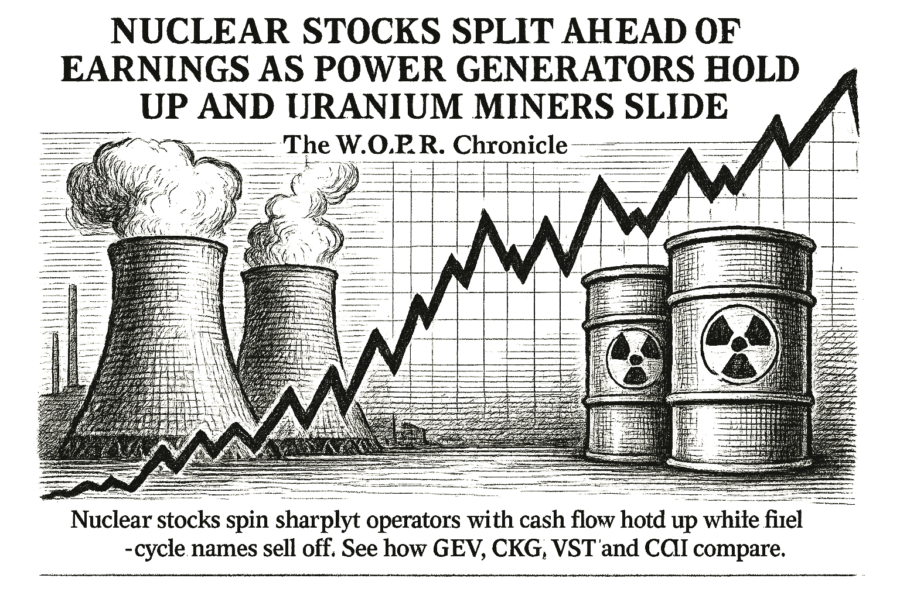

SPY
Current: $771.28Change: -0.07 (-0.01%)
Updated:
Source: yahoo_chartFreshness: fresh


Nuclear stocks split sharply: operators with cash flow hold up while fuel-cycle names sell off. See how GEV, CEG, VST and CCJ compare.

Today's Headline: Nuclear Stocks Split Ahead of Earnings as Power Generators Hold Up and Uranium Miners Slide
Setup: Nuclear stocks split sharply: operators with cash flow hold up while fuel-cycle names sell off. See how GEV, CEG, VST and CCJ compare.
Primary Topic: Oil Prices and Earnings Reports
Specific Development: Brent crude prices have dropped below $100, while the market anticipates key earnings reports from major companies.
Why Today Is Different: The significant decline in oil prices could signal broader economic concerns, impacting investor sentiment ahead of earnings announcements.
Secondary Topics: Market Sentiment; Earnings Season
Tone: cautious
Sectors: Energy; Technology
Companies: Micron Technology; Tesla
Commodities: Brent; WTI
Countries Or Regions: United States
Macro Themes: Economic Outlook; Earnings Expectations
Why This Story: The interplay between declining oil prices and upcoming earnings reports could reshape market dynamics and investor strategies.
Why This Matters: Nuclear Stocks Split Ahead of Earnings as Power Generators Hold Up and Uranium Miners Slide is the clearest current evidence-led frame for Joshua's observation-only review; missing facts remain explicit intelligence gaps.

Summary: Global markets are reacting to falling oil prices and mixed performance in tech stocks.
What Happened Overnight: Brent crude prices fell below $100, impacting energy stocks, while tech stocks showed mixed performance ahead of earnings.
What Changed Materially: Oil prices dropped significantly, influencing market sentiment.
Which Assets Sectors Are Affected: Energy; Technology
Does It Look Like Noise Or A Real Regime Input: This appears to be a significant regime input due to the implications for economic outlook.
Why This Matters: The decline in oil prices could signal economic weakness, impacting investor sentiment and stock performance.

No high-priority earnings expectation block is supported by the current canonical snapshot.

- WOPR learning pipeline: Collecting samples
- Candidates evaluated 24h: 0
- Current gate: Evidence
- Notification ledger events in 24h: 4
- Pending orders created/canceled/filled/expired: 0/0/0/0
- Pending lifecycle interpretation: Pending-order cancellations have trackable reasons and no obvious rapid churn pattern.
- Portfolio risk: Label: High / Score: 100.0
- Latest intelligence gap report: intelligence_gap_report_2026-09-27.pdf
Why This Matters: The active gate is Evidence, so the key question is why candidates are stopping before approval, not how to force trades.

- Sentinel role: infrastructure and operational status only.
- State: ONLINE
- Last successful validation: 2026-10-02T14:16:27.103821+00:00
- Payloads accepted/rejected: 23332/0
- Node health score: 100
Why This Matters: Sentinel is ONLINE, so Joshua should use its context only to the extent the latest accepted pulse is fresh and authenticated.

CANDIDATES MOVING THROUGH JOSHUA'S INVESTMENT-REVIEW WORKFLOW
FROZEN DAILY BRIEF SNAPSHOT | 2026-10-02T14:15:46.874690+00:00
QUEUE SUMMARY | Investment Ready: 0 | Waiting for Price: 0 | Waiting for Evidence: 1 | Research Underway: 1 | Governance Hold: 5 | Monitor Only: 0
Investment-ready status: No candidates are currently Investment Ready.
#5 QBTS - Governance Hold [Moved Down 3->5]
Joshua's Thesis: Positive thesis not yet established.
Why Waiting: Governance gate has not cleared.
Price: 16.78 now; 17.52 preferred entry
What Unlocks It: Governance gate clears; Clear valuation support; Evidence that the business quality matches the risk being taken
Portfolio Fit: 0.0/100 — VERY LOW
Portfolio Fit Drivers: projected Unclassified exposure 79.4%; projected Unclassified exposure 79.4%; candidate amount $100 vs $26 currently allocated
Candidate Risk: 100.0/100 — VERY HIGH ↑
Risk Drivers: projected Unclassified exposure 79.4%; projected Unclassified exposure 79.4%; candidate amount $100 vs $26 currently allocated
Next: Re-evaluate after the recorded gate clears. Owner: Joshua.
#13 PLTR - Governance Hold [Moved Down 12->13]
Joshua's Thesis: Positive thesis not yet established.
Why Waiting: Governance gate has not cleared.
Price: 191.75 now; 183.49 preferred entry
What Unlocks It: Governance gate clears; Clear valuation support; Evidence that the business quality matches the risk being taken
Portfolio Fit: 0.0/100 — VERY LOW
Portfolio Fit Drivers: projected Technology exposure 100.0%; projected AI software exposure 79.4%; candidate amount $100 vs $26 currently allocated
Candidate Risk: 100.0/100 — VERY HIGH
Risk Drivers: projected Technology exposure 100.0%; projected AI software exposure 79.4%; candidate amount $100 vs $26 currently allocated
Next: Re-evaluate after the recorded gate clears. Owner: Columbo.
#14 IONQ - Waiting for Evidence [Moved Down 13->14]
Joshua's Thesis: Positive thesis not yet established.
Why Waiting: Positioning gate failed.
Price: 44.72 now; 40.09 preferred entry
What Unlocks It: Clear valuation support; Evidence that the business quality matches the risk being taken; Independent evidence streams pointing the same way
Portfolio Fit: 0.0/100 — VERY LOW
Portfolio Fit Drivers: projected Unclassified exposure 79.4%; projected Unclassified exposure 79.4%; candidate amount $100 vs $26 currently allocated
Candidate Risk: 100.0/100 — VERY HIGH ↑
Risk Drivers: projected Unclassified exposure 79.4%; projected Unclassified exposure 79.4%; candidate amount $100 vs $26 currently allocated
Next: Positioning status must no longer be warning. Owner: Joshua.
#18 SPCX - Governance Hold [Moved Down 14->18]
Joshua's Thesis: Positive thesis not yet established.
Why Waiting: Governance gate has not cleared.
Price: 156.87 now; 152.19 preferred entry
What Unlocks It: Governance gate clears; Clear valuation support; Evidence that the business quality matches the risk being taken
Portfolio Fit: 0.0/100 — VERY LOW
Portfolio Fit Drivers: projected Unclassified exposure 79.4%; projected Unclassified exposure 79.4%; candidate amount $100 vs $26 currently allocated
Candidate Risk: 100.0/100 — VERY HIGH ↑
Risk Drivers: projected Unclassified exposure 79.4%; projected Unclassified exposure 79.4%; candidate amount $100 vs $26 currently allocated
Next: Re-evaluate after the recorded gate clears. Owner: Advisory Committee.
#20 RCL - Governance Hold [Moved Down 19->20]
Joshua's Thesis: Positive thesis not yet established.
Why Waiting: Governance gate has not cleared.
Price: 276.30 now; 282.98 preferred entry
What Unlocks It: Governance gate clears; Clear valuation support; Evidence that the business quality matches the risk being taken
Portfolio Fit: 0.0/100 — VERY LOW
Portfolio Fit Drivers: projected Unclassified exposure 79.4%; projected Unclassified exposure 79.4%; candidate amount $100 vs $26 currently allocated
Candidate Risk: 100.0/100 — VERY HIGH ↑
Risk Drivers: projected Unclassified exposure 79.4%; projected Unclassified exposure 79.4%; candidate amount $100 vs $26 currently allocated
Next: Re-evaluate after the recorded gate clears. Owner: Columbo.
#23 ANGX - Governance Hold [Moved Down 21->23]
Joshua's Thesis: Positive thesis not yet established.
Why Waiting: Governance gate has not cleared.
Price: 4.22 now; 4.32 preferred entry
What Unlocks It: Governance gate clears; Clear valuation support; Evidence that the business quality matches the risk being taken
Portfolio Fit: 0.0/100 — VERY LOW
Portfolio Fit Drivers: projected Unclassified exposure 79.4%; projected Unclassified exposure 79.4%; candidate amount $100 vs $26 currently allocated
Candidate Risk: 100.0/100 — VERY HIGH ↑
Risk Drivers: projected Unclassified exposure 79.4%; projected Unclassified exposure 79.4%; candidate amount $100 vs $26 currently allocated
Next: Re-evaluate after the recorded gate clears. Owner: Advisory Committee.
#25 DIA - Research Underway [Moved Down 23->25]
Joshua's Thesis: Positive thesis not yet established.
Why Waiting: Research evidence is still being gathered.
Price: Current price unavailable.; Preferred entry not established.
What Unlocks It: Clear valuation support; Evidence that the business quality matches the risk being taken; Independent evidence streams pointing the same way
Portfolio Fit: 0.0/100 — VERY LOW
Portfolio Fit Drivers: projected ETF exposure 79.4%; projected Broad market exposure 79.4%; candidate amount $100 vs $26 currently allocated
Candidate Risk: 100.0/100 — VERY HIGH ↑
Risk Drivers: projected ETF exposure 79.4%; projected Broad market exposure 79.4%; candidate amount $100 vs $26 currently allocated
Next: Clear valuation support; Evidence that the business quality matches the risk being taken; Independent evidence streams pointing the same way. Owner: Columbo.
Since the prior Chronicle: UUUU - Removed; XRAY - Removed
Observation only. This section creates no recommendation, order, authority, or execution instruction.

- Which recorded governance requirement must clear before QBTS can advance?
- Which recorded governance requirement must clear before PLTR can advance?
- If IONQ reaches the recorded price condition <= 40.09, which recorded evidence and governance requirements would still remain?
- Which recorded governance requirement must clear before SPCX can advance?

The significant drop in oil prices is likely to impact investor sentiment and could lead to a cautious approach ahead of earnings reports. The mixed performance in tech stocks further complicates the outlook as investors weigh potential risks against earnings expectations.

Compared to: 2026-10-01
- Market weather: Still Elevated
- Top opportunity: Still FDX
- Joshua gate: Still Evidence
- 2Y Treasury.last_price: 4.88 -> 4.78 (down); 2Y Treasury.last_price changed 2.05% versus the prior frozen Chronicle snapshot.
- 2Y Treasury.percent_change: -0.20449897750510812 -> -2.049180327868845 (down); 2Y Treasury.percent_change changed 902.05% versus the prior frozen Chronicle snapshot.
- 10Y Treasury.last_price: 5.29 -> 5.24 (down); 10Y Treasury.last_price changed 0.95% versus the prior frozen Chronicle snapshot.
- 10Y Treasury.percent_change: 0.5703422053231987 -> -0.9451795841209797 (down); 10Y Treasury.percent_change changed 265.72% versus the prior frozen Chronicle snapshot.
- 30Y Treasury.last_price: 5.64 -> 5.61 (down); 30Y Treasury.last_price changed 0.53% versus the prior frozen Chronicle snapshot.
- 30Y Treasury.percent_change: 0.8944543828264727 -> -0.5319148936170099 (down); 30Y Treasury.percent_change changed 159.47% versus the prior frozen Chronicle snapshot.
- SPY.last_price: 760.91 -> 771.28 (up); SPY.last_price changed 1.36% versus the prior frozen Chronicle snapshot.
- SPY.percent_change: -0.8172788654553015 -> -0.00907499837947106 (up); SPY.percent_change changed 98.89% versus the prior frozen Chronicle snapshot.
- QQQ.last_price: 738.86 -> 753.015 (up); QQQ.last_price changed 1.92% versus the prior frozen Chronicle snapshot.
- QQQ.percent_change: -0.3022534070975589 -> 1.1437206178643367 (up); QQQ.percent_change changed 478.40% versus the prior frozen Chronicle snapshot.
- IWM.last_price: 276.61 -> 282.83 (up); IWM.last_price changed 2.25% versus the prior frozen Chronicle snapshot.
- IWM.percent_change: -1.7929418447773948 -> 0.30499698549489546 (up); IWM.percent_change changed 117.01% versus the prior frozen Chronicle snapshot.

The significant drop in oil prices could indicate broader economic concerns, prompting a reassessment of market strategies.
No new warnings issued; however, the decline in oil prices should be monitored closely.
Portfolio Construction Review
Current allocation: 25.91 allocated.
Largest sector: Technology at 100.0%.
Largest theme: AI infrastructure at 100.0%.
Diversification: Concentrated (0.0).
Cash allocation: 97.4% unallocated.
Recommended exposure: FDX at portfolio-fit score 0.0.
Portfolio fit: FDX has a mixed portfolio fit; the diversification improvement is not decisive yet.
Why This Matters: Portfolio Manager evaluates whether an opportunity improves this portfolio; it does not select the investment, vote, or authorize execution.

Monitor the impact of oil price fluctuations on market sentiment and upcoming earnings reports.

| Can trigger trade | no |
| Can modify trade rules | no |
| Can add watch items | yes |
| Can add review questions | yes |
| Can adjust confidence notes | yes |
| Input policy | external_intelligence_plus_sanitized_internal_observations |
| External policy | The Editor-in-Chief synthesizes current world/market context where available and labels unknowns; provider/model provenance remains separate. |
| Internal policy | Joshua/WOPR/Sentinel facts are supplied as sanitized observation-only summaries. |
| Editorial model | gpt-4o-mini |
- Selected by a deterministic daily rotation through symbols already present in the persisted Chronicle snapshot.
- Committee status: watch; confidence: 71.9.
- Next recorded catalyst: FOMC Minutes Meeting of September 15-16.
- Accenture rallies more than 20% after earnings beat, heads for best day ever
- Desk: earnings; source: CNBC; linked symbols: none recorded.
- Published: 10/1/26 07:55 MST.
- High-impact watch: FOMC Minutes Meeting of September 15-16 - 10/7/26 11:00 MST.
- Affected assets: US equities, Treasuries, USD; source: federal_reserve_calendar.
- MU earnings: September 30, 2026, after close.
- Technology: 2.30% session performance; source: persisted sector ledger.
- Utilities: 0.95% session performance; source: persisted sector ledger.
- Consumer Discretionary: -0.06% session performance; source: persisted sector ledger.
- VIX: -2.99% recorded move; price: 15.59.
- Session: regular; catalyst status: possible; source: yahoo_chart.
- Oil price movements; why it matters: Falling oil prices could indicate economic weakness, affecting market sentiment.
- State: broad_weakness; score: 21.10/100; advance/decline ratio: 1.20.
- Above 50-day average: 16.80%; sample: 119; provider: sentinel_sampled_breadth.
- Decision outcomes evaluated: 16; currently untestable: 0.
- Warning review: unknown 2; confidence calibration: insufficient_sample.
- Current macro regime: defensive_rotation; change probability: unavailable.
- Risk dashboard: cautious (62/100); breadth: broad_weakness; sentiment: neutral.
- Scenario board only - a current-state observation, not a forecast or execution instruction.
- Helped architect Berkshire Hathaway's quality-focused investment approach and popularized multidisciplinary mental models for decision-making.
- Published quotation: "The big money is not in the buying and selling, but in the waiting."
- Published framework: Combine value discipline with business quality, strong incentives, and a long runway. Use multidisciplinary models, invert problems, demand a margin of safety, and wait patiently for a small number of unusually favorable opportunities.
- Committee lens: Munger challenges Joshua to examine incentives, base rates, second-order effects, and avoidable cognitive errors before accepting an apparently attractive thesis.
- Public philosophy profile only; no participation, endorsement, or current recommendation is implied.
- Which recorded governance requirement must clear before PLTR can advance?
- FDX: No canonical symbol-specific material event is linked.
- Attach the missing FDX evidence before the next committee review.
- Define evidence that would confirm or retire each unresolved warning before the next review window.
- Which recorded governance requirement must clear before QBTS can advance?
- Which recorded governance requirement must clear before PLTR can advance?
- If IONQ reaches the recorded price condition <= 40.09, which recorded evidence and governance requirements would still remain?
- Which recorded governance requirement must clear before SPCX can advance?
- Evidence agenda: FDX - No canonical symbol-specific material event is linked.
- Proposed review: Micron Technology earnings report; why it matters: It could significantly influence tech stock valuations and market sentiment.
- Canonical instruments reviewed: 24; delayed 6, fresh 18.
- Leading sources: yahoo_chart (21), treasury_official_yield_curve (3).
- Snapshot recorded: 10/2/26 07:15 MST.
Nuclear Stocks Split Ahead of Earnings as Power Generators Hold Up and Uranium Miners Slide
Storm meter: Elevated
#5 QBTS - Governance Hold [Moved Down 3->5]
Observation mode: observation_only
Watch: Micron Technology earnings report; why it matters: It could significantly influence tech stock valuations and market sentiment.
Question: Which recorded governance requirement must clear before QBTS can advance?